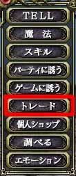

NPCとは誰も操作していないプレイヤーのことで、特に目的もなく町を徘徊しているチュートリアルライラなどです。
始めにマクロを使わないトレードのやり方を説明します。
まず一番重要なことは、相手に十分近づいてください。距離が離れすぎていると、トレードの申し込み自体ができません。次に「Tabキー」もしくは「Shift + 方向キー」相手にカーソルを合わせます。フラフラと移動しているNPCに対しては「/(スラッシュ)」キーのターゲットロックオンを使うと便利かもしれません。
移動しているNPC には話しかけている状態で、コマンドを使いトレードを申し込むと便利です。
相手に十分近づき、カーソルを合わせたら、エンターキーを押して下さい。メニューが出てきますので、「トレード」を選択してください。この瞬間、NPCはトレードを自動的に受理しますので、トレードウィンドウが表示されます。
マクロを使った場合のトレードは、全て半角英数で「:trade %t」、「:trade NPCの名前」を使います。%tを使う場合は、カーソルを相手に合わせる必要があります。移動しているNPCに対しては、マクロを使った方が早いかもしれません。
当然のことながらマクロを使う場合でも、相手に十分に近づいてから申し込んでください。
 |
|